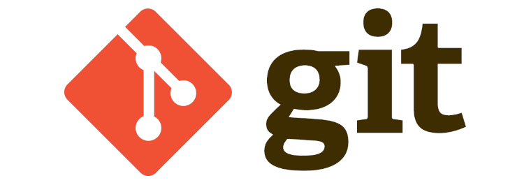

Git fundamentals for developers and IT professionals¶

Git is a distributed version control system created by Linus Torvalds to manage the Linux kernel source code. I use Git, together with GitHub, to manage:
- The source code of the software I develop.
- The source code and compiled files of my website.
- The source code of the books I wrote.
- My notes, written with Obsidian.
Git lets me track every change and, overall, the evolution of a repository. It is well suited to any file that can be represented as text. This is why, for the past few years, I have been writing text in Markdown and following the Documentation as Code approach.
Git is a vital tool that anyone working in IT should master, and it is essential for developers.
Before we start, here are some important considerations:
- Storage: Git saves every version of every file. For text files, a change can be represented by just the modified lines, but for binary files a revision often means saving a full copy of the file. A repository may therefore grow in size, and it may require maintenance to reduce the space it uses and improve its performance.
- Clean structure: especially in a team, it is important to adopt a common workflow. The repository should contain only the files necessary to recreate the environment, and no cache, compiled or temporary files.
- Security: since Git saves permanent copies of all the files added to the repository, be careful about including files with sensitive information such as passwords. We can remove the references to such files locally, but this process is not fully effective on third-party platforms like GitHub.
In this series of posts, we explore the fundamentals of Git. To learn more, I recommend the following resources:
- Pro Git Book by Scott Chacon and Ben Straub.
- GIT for Beginners by Anthony Baire.
Working Locally¶
Let's start by creating a local repository. We can initialize any directory, empty or not, as a Git repository:
$ mkdir test
$ cd test
$ git init
Initialized empty Git repository in /Users/dainese/src/test/.git/
localhost:test dainese$ git status
On branch main
No commits yet
nothing to commit (create/copy files and use "git add" to track)
The commands above create a .git directory, which contains all the information of the repository. As long as this directory remains intact, the contents of the repository are safe.
When we add a file like README.md, Git marks it as untracked. To include the file in the repository, we add it to the staging area (also called the index) with the add command. Only then can we commit it:
$ git status
On branch main
No commits yet
Untracked files:
(use "git add <file>..." to include in what will be committed)
README.md
nothing added to commit but untracked files present (use "git add" to track)
$ git add README.md
$ git commit -m "Add readme file"
[main (root-commit) 18ded90] Add readme file
1 file changed, 1 insertion(+)
create mode 100644 README.md
We can think of a commit as a snapshot of the current environment. The snapshot receives a unique identifier (SHA-1 hash), which lets us track it:
$ git log
commit 18ded90e0116a6c228b6a61a9229ff119a1f77f1 (HEAD -> main)
Author: Andrea Dainese <andrea.dainese@pm.me>
Date: Fri Aug 23 15:24:05 2024 +0200
Add readme file
The commit is associated with the main branch. HEAD indicates our current position: it is a pointer to the commit we are working on.
Using the first characters of the commit ID, we can view its details:
$ git show 18ded90
commit 18ded90e0116a6c228b6a61a9229ff119a1f77f1 (HEAD -> main)
Author: Andrea Dainese <andrea.dainese@pm.me>
Date: Fri Aug 23 15:24:05 2024 +0200
Add readme file
diff --git a/README.md b/README.md
new file mode 100644
index 0000000..62c8d0b
--- /dev/null
+++ b/README.md
@@ -0,0 +1 @@
+Readme file
Staging Area (Index)¶
The staging area, called the index, reflects the changes that will be consolidated by a commit. We can work with it using the following commands:
git add: adds a file to the staging area.git rm: removes a file from the staging area and deletes it.git reset: removes a file from the staging area but does not delete it.git checkout: restores a file from the staging area (the file must not have been added).git diff: shows the differences between the file in the staging area and the current file.
Local Branches¶
When my workspace contains a dataset that only grows, I tend to work with a single branch. For example, my notes, my source code and the compiled version of my website are all stored in repositories with a single branch.
More complex projects need multiple branches. Generally:
- The main branch contains the latest version of the code I consider stable.
- I keep branches for the major previous releases, for historical purposes.
- When I need to make changes, I create a dedicated branch, which I merge into the main branch once all the tests pass.
Let's see how to create a new branch:
As an example, we add a file to the branch and create additional branches:
$ echo "Doc file" > HOWTO.md
$ git add HOWTO.md
$ git commit -m "Add howto file"
[add_doc c12d12e] Add howto file
1 file changed, 1 insertion(+)
create mode 100644 HOWTO.md
$ git checkout main
Switched to branch 'main'
$ git checkout -b add_examples
Switched to a new branch 'add_examples'
$ echo "Example file" > EXAMPLES.md
$ git add EXAMPLES.md
$ git commit -m "Add example file"
[add_examples 8645356] Add example file
1 file changed, 1 insertion(+)
create mode 100644 EXAMPLES.md
A branch is a pointer to a commit. When we create a branch, we can specify the pointer (ID, tag, branch) or use the one we are currently on, as we did in the examples above.
Each commit can have:
- 0 parents, if it is the initial commit.
- 1 parent, if it is an ordinary commit.
- 2 or more parents, if it is the result of a merge.
Let's check the current state of our repository:
$ git log --all
commit 86453561ff929c6d6decf6c14b798df7072e59d7 (add_examples)
Author: Andrea Dainese <andrea.dainese@pm.me>
Date: Fri Aug 23 15:28:08 2024 +0200
Add example file
commit c12d12e8c24d89dfd81505562635e11166d6304d (add_doc)
Author: Andrea Dainese <andrea.dainese@pm.me>
Date: Fri Aug 23 15:27:27 2024 +0200
Add howto file
commit 18ded90e0116a6c228b6a61a9229ff119a1f77f1 (HEAD -> main)
Author: Andrea Dainese <andrea.dainese@pm.me>
Date: Fri Aug 23 15:24:05 2024 +0200
Add readme file
We have three commits, one for each branch, and we are currently on the main branch. We can merge the add_doc branch into main:
$ git merge c12d12e8c24d89dfd81505562635e11166d6304d
Updating 18ded90..c12d12e
Fast-forward
HOWTO.md | 1 +
1 file changed, 1 insertion(+)
create mode 100644 HOWTO.md
In this example, we used the ID, but we could have used the branch name.
We can view all the branches with the git branch command, or delete a specific branch with git branch -d add_doc.
Merge Conflicts¶
In the previous example, the branches worked on separate files, so no conflicts occurred. It is common, however, to work on the same files at the same time, and in that case the merge command notifies us of the conflicts:
$ git merge fce3122f882e68f922a718dbdf6ba6a675bec2b7
Auto-merging import.py
CONFLICT (add/add): Merge conflict in import.py
Automatic merge failed; fix conflicts and then commit the result.
We can check the status:
$ git status
On branch main
You have unmerged paths.
(fix conflicts and run "git commit")
(use "git merge --abort" to abort the merge)
Changes to be committed:
new file: file2.py
Unmerged paths:
(use "git add <file>..." to mark resolution)
both added: import.py
In this case, the file file2.py has been added to the staging area, but import.py has been modified by both branches and requires manual intervention. If we examine import.py, we see a structure similar to the following:
<<<<<<< HEAD
import file1
o = file1.obj()
=======
import file2
o = file2.obj()
>>>>>>> fce3122f882e68f922a718dbdf6ba6a675bec2b7
We must correct the file manually, add it to the staging area and commit the changes.
Understanding HEAD¶
We have seen that HEAD is a pointer to a commit. Generally, HEAD points to the latest commit of a branch, so we can say that it always points to a branch.
If we decide to work on a specific commit that is not the latest of a branch (i.e., it does not point to a branch), we are in a detached HEAD state.
We can end up in a detached state in the following cases:
- Checking out a specific commit hash (SHA-1).
- Checking out a remote branch without fetching it first.
To make changes from a detached state, we must create a new branch.